publico · 1024 px

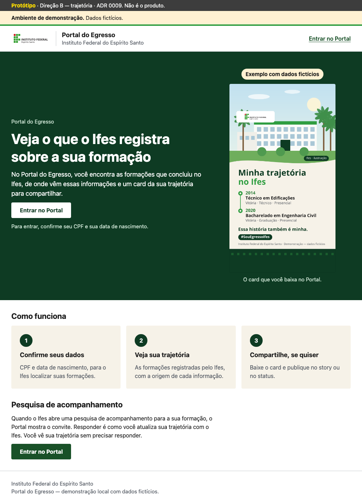

Comparação de HTML servido pelo Django, com dados fictícios. Capturas completas: clique para abrir. O protótipo tem uma faixa extra; as primeiras telas da implementação descontam a faixa de demonstração.
Registro da validação · Medidas · Contraste
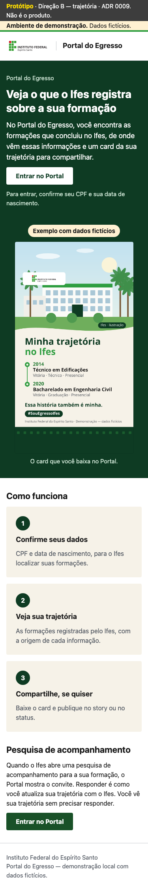
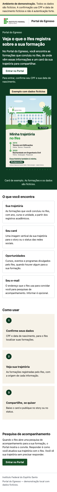

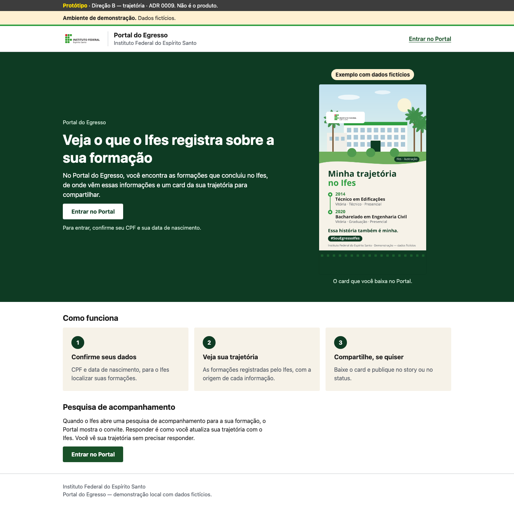
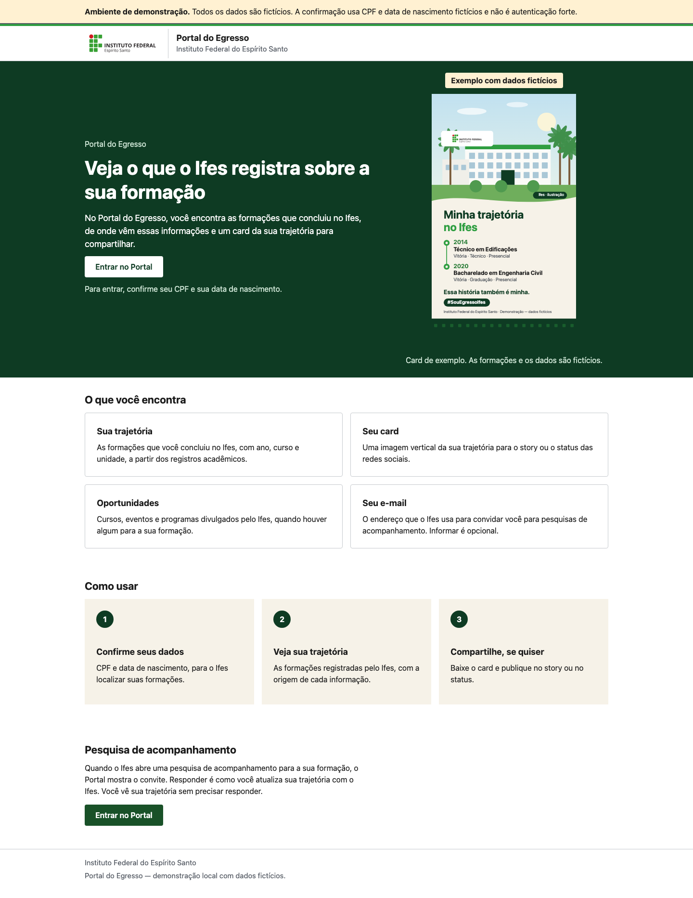
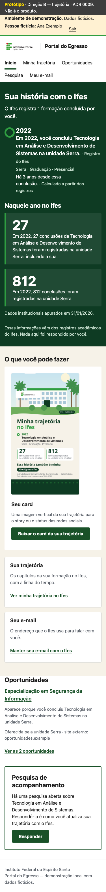
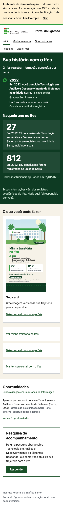
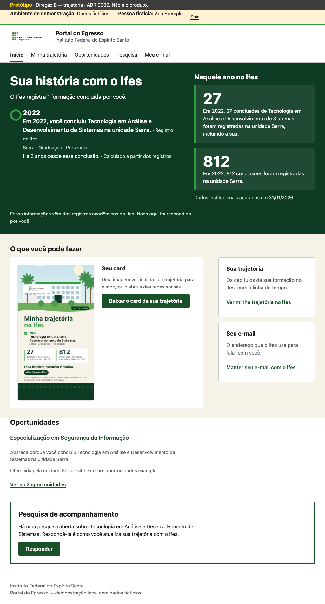
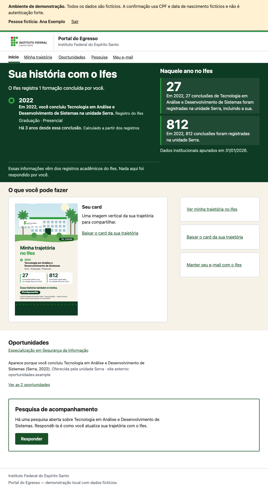
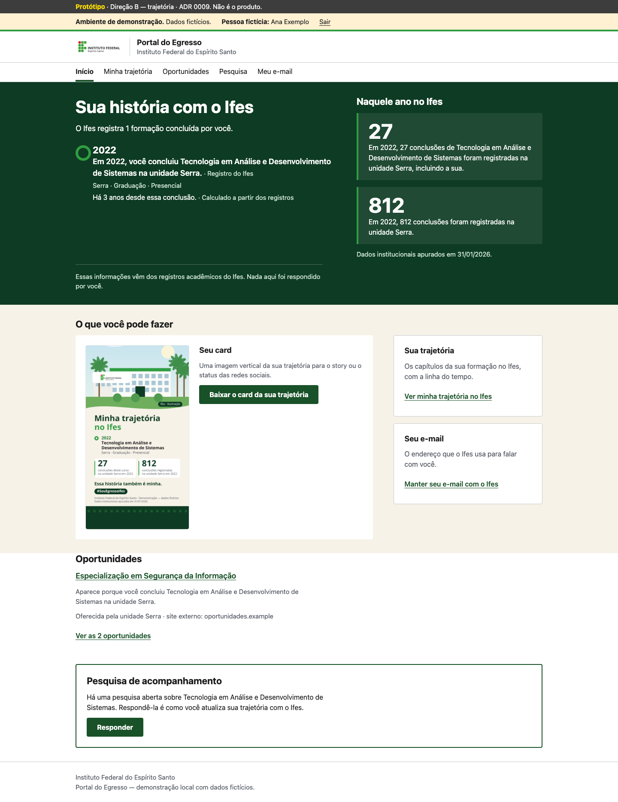
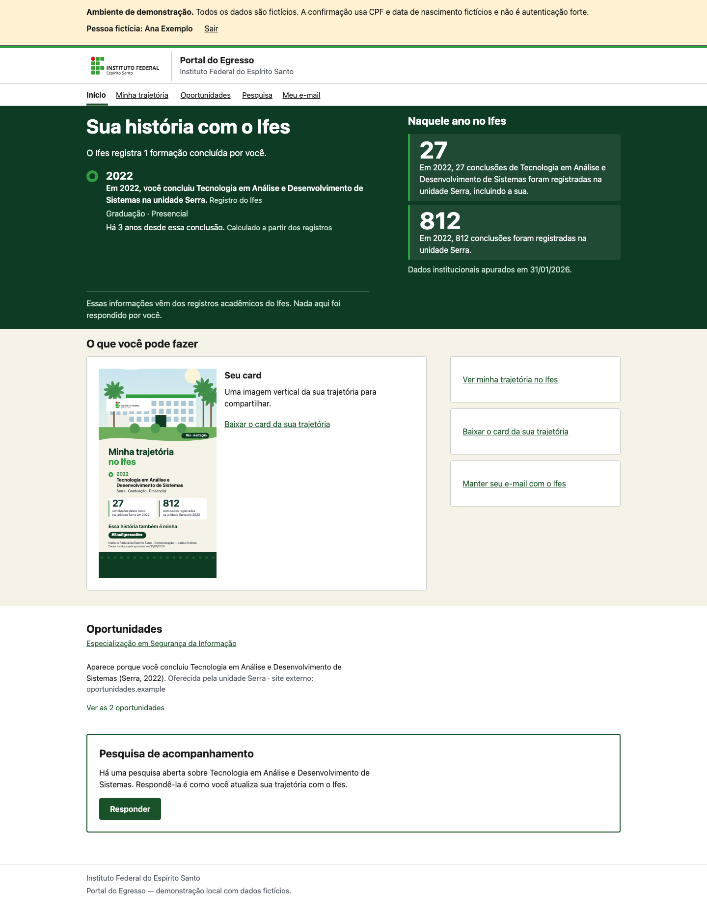
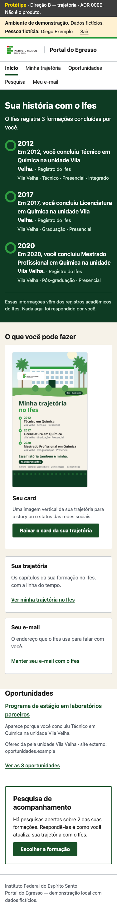
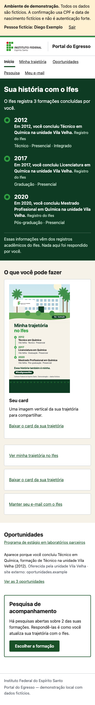
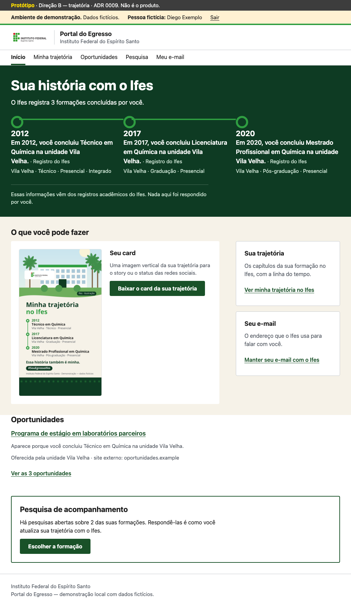
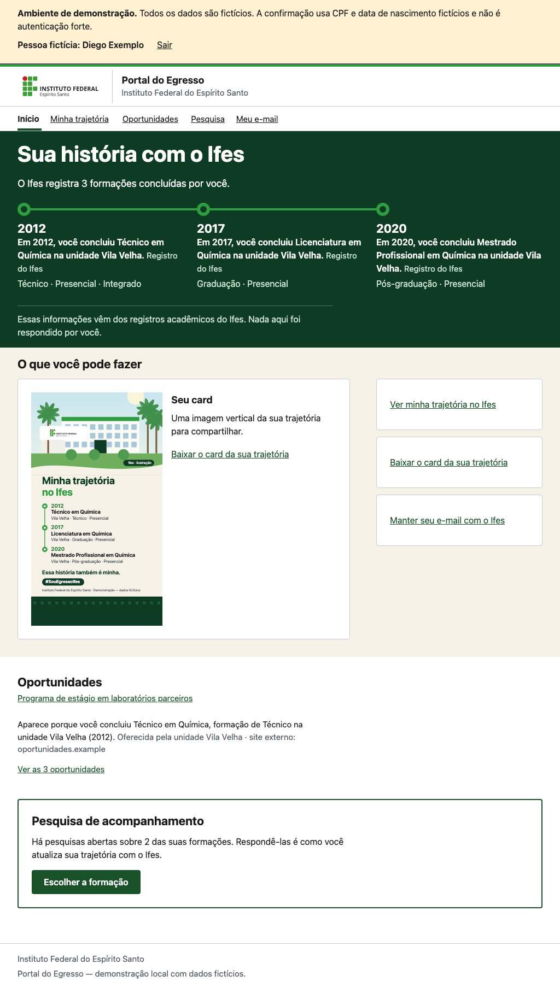
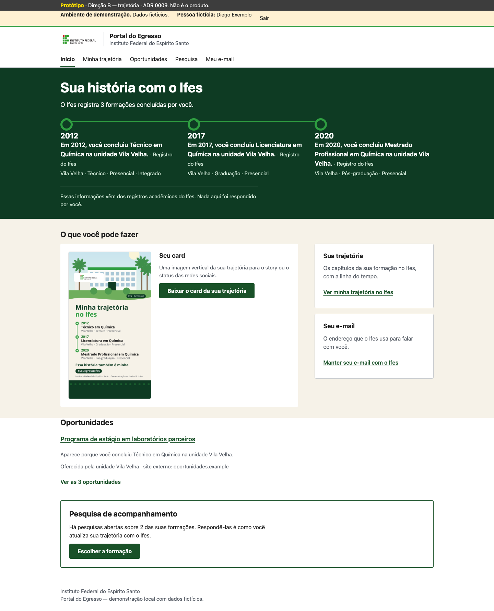
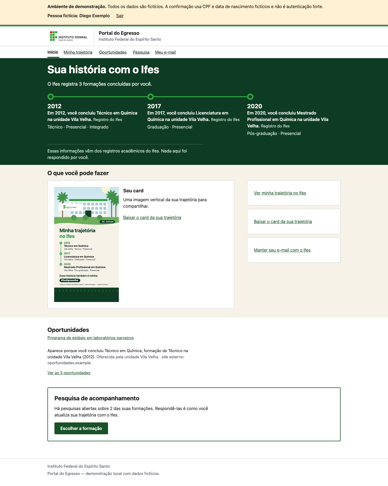
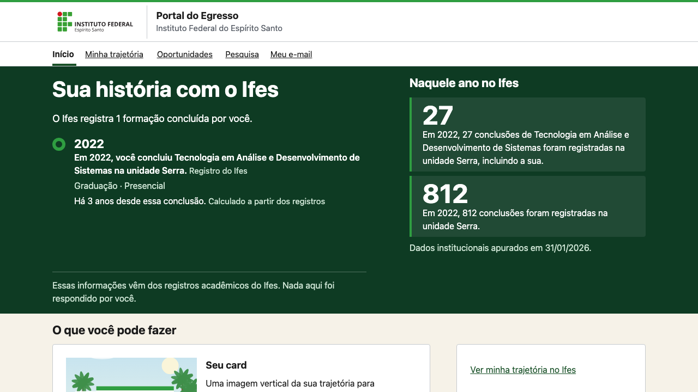
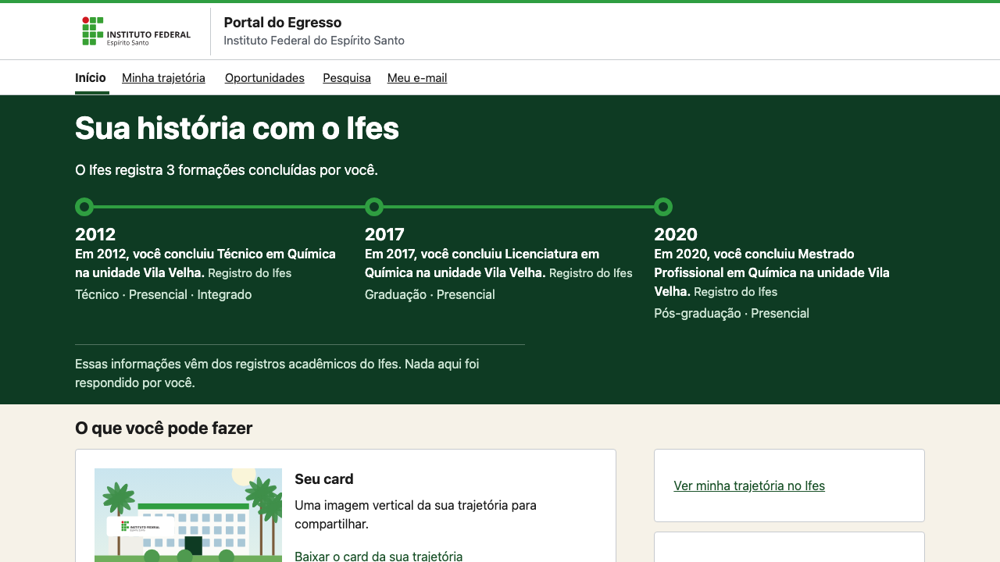
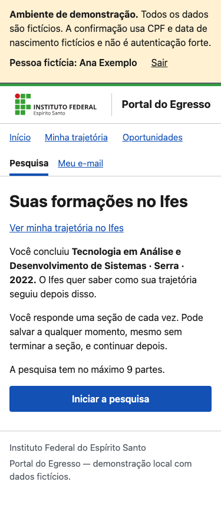
Entrada, trajetória, contato e oportunidades, em 375, 1024 e 1440 px:
entrar: 375 px · 1024 px · 1440 px
trajetoria: 375 px · 1024 px · 1440 px